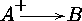
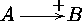
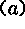
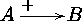
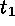
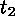

Xy-pic User's Guide 


^, _, or |, and the actual label (in fact -
is a place). In general you may insert the following:
< will place the label at the point where the actual arrow
begins, i.e., "appears from under" the base, so
$\xymatrix@1{A\ar[r]^<{+}&B}$ will typeset .
> will place the label at the point where the actual
arrow ends, i.e., "disappears below" the target, so
$\xymatrix@1{A\ar[r]^>{+}&B}$ will typeset .
<< and >> will place the following label at a point just
a bit further from the beginning and end of the arrow, so
further from the beginning and end of the arrow, so
$\xymatrix@1{A\ar[r]^>>{+}&B}$ will typeset . Using more <s or >s
will move the label further in.
()s:  indicates that the label should be
"tied" to the point a of the way from the center of the base entry
(called (0)) to the center of the target (called (1))
instead of in the middle, so
$\xymatrix@1{A\ar[r]^(.3){+}&B}$ will typeset .
< or >s, in which case
the place is computed as if the base was specified by the
<s and target specified by the >s. Hence
$\xymatrix@1{A\ar[r]^<(0){+}&B}$ will typeset .
!{;} places the label
relative to the point on the arrow where the line from the target
to the target crosses it. BUG: Only works for straight
arrows at present.
Xy-pic User's Guide